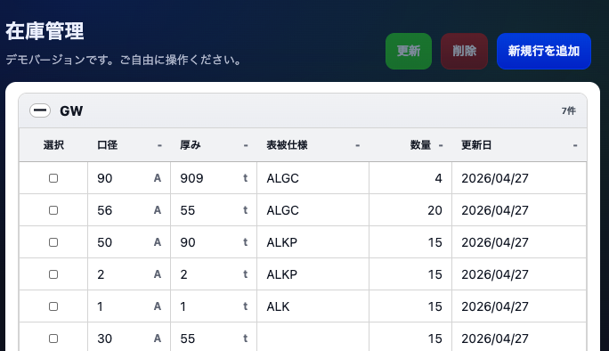

在庫管理アプリ
個人事業主の家族のためにシンプルな在庫管理アプリを作成しました。
制作したコードの中身は
こちら
からご確認いただけます。
＜使用言語＞
HTML / CSS / JavaScript
＜工夫した点＞
ユーザー(家族)へのヒアリングを重ね、ITに詳しくなくても直感的に操作できるようなUIにしました。
開発効率を上げるためにAIによるコーディングも取り入れました。
デプロイやバックエンドの実装は行わず、フロントエンドのみで完結させることで、シンプルな構成にしました。

Works_CodeJump
CodeJumpでデザインカンプをコーディングしました。
制作したコードの中身は
こちら
からご確認いただけます。